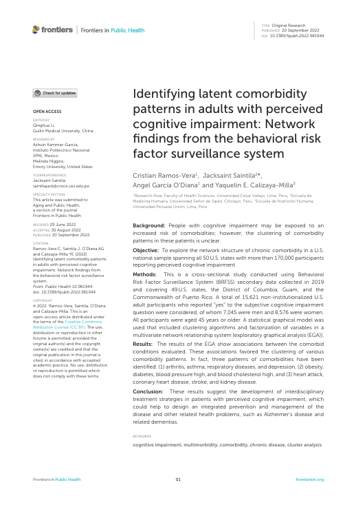
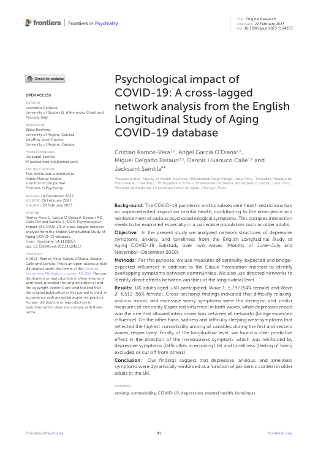
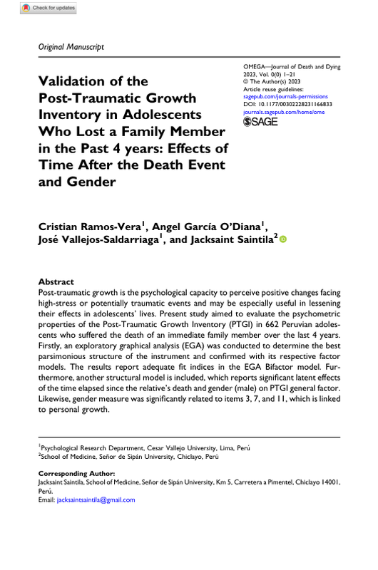
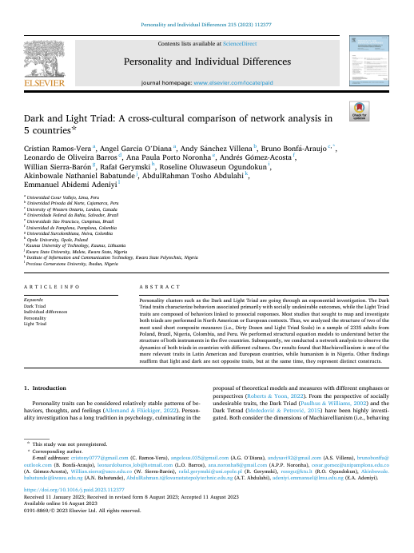
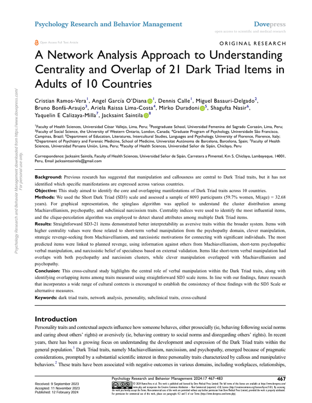
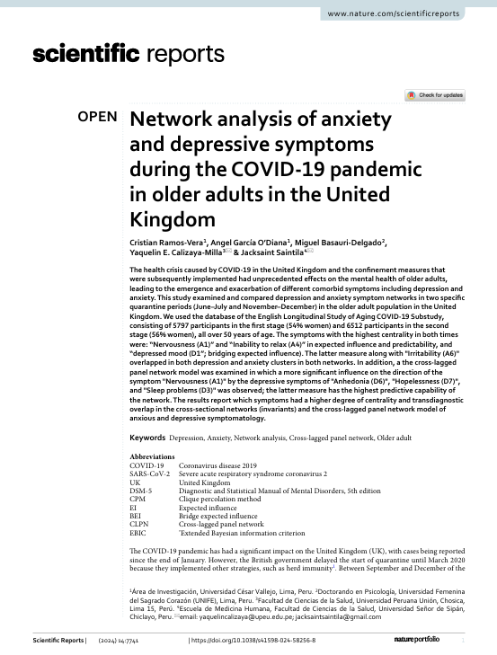

Publicaciones
En PsiNet LAB compartimos nuestras investigaciones con la comunidad científica y el público general. Aquí encontrarás nuestros artículos, papers y contribuciones académicas más recientes.






Frontiers in Public Health (2022), 10.
19 de Setiembre de 2022
Frontiers in Psychiatry (2023), 14.
21 de Febrero de 2023
OMEGA – Journal of Death and Dying (2023).
03 de Abril de 2023
Personality and Individual Differences (2023), 215.
16 de Agosto de 2023
Psychology Research and Behavior Management (2024), 17.
12 de Febrero de 2024
Scientific Reports (2024), 14.
02 de Abril de 2024